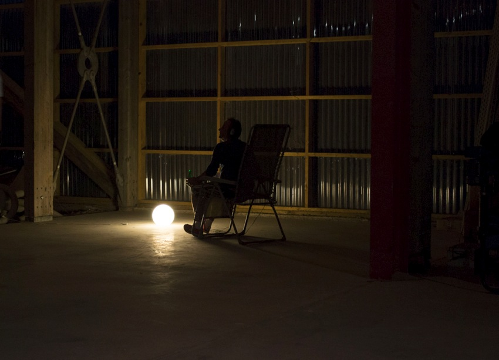

Ex Machina
Dessin à la craie réalisé à l’échelle 1 à partir d’un schéma technique du Blériot XI, un des premiers avions de série fonctionnel de l’histoire de l’aviation, à bord duquel un certain pilote Edouard Bague aurait tenté de traverser la méditerranée jusqu’en Corse où on ne l’aurait jamais retrouvé.
Dans le cadre de la residence d'artistes UTOPIA


Piece sonore | 3:26"
Le visiteur est invité à s’installer confortablement dans une chaise longue
afin d’écouter au casque une voix rassurante au débit lent, appelant au calme
et énonçant des indications à suivre en cas d’incendie, le résultat oscillant
entre une séance d’hypnose et des consignes de sécurité telles qu’on les
trouve à bord d’un avion.
Textes de Verana Costa
